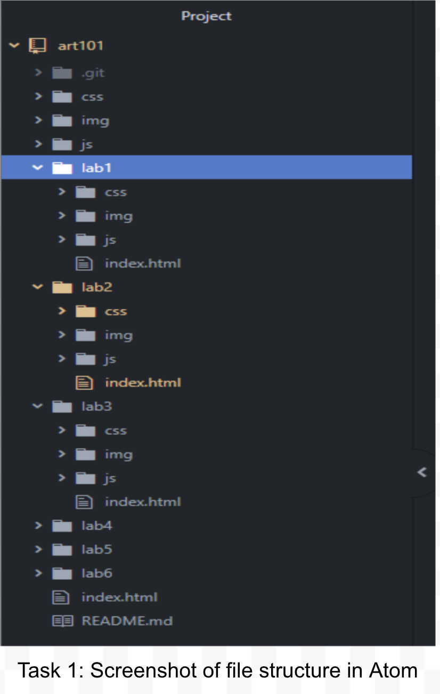

The goal of Lab 3 is to further develop our website's local file structure and to familiarize ourselves with the file structure development process by also adding additional index.html and css files to our skeletal structure.
Creating and managing the file structure as well as adding new files was very easy as we took advantage of Wes's handy file structure template that was given to the class. Between the both of us, we have many years of exprience with computers, troubleshooting, and programming, so adding new files and moving images around for Lab 3 was no trouble at all.
The results are self evident, as you are viewing them now. Below are screenshots of our efforts:
